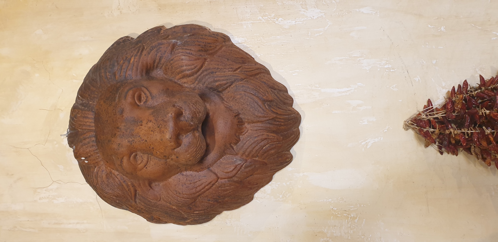
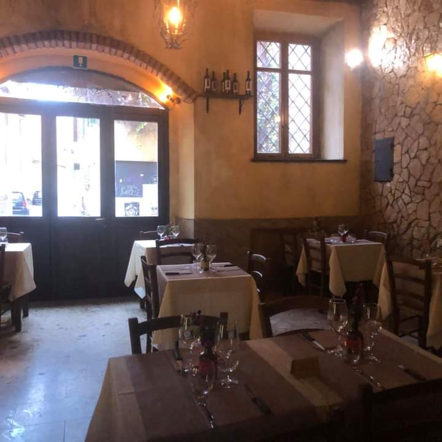

An authentic corner of Rome in the heart of Trastevere
Just a stone's throw from the Tiber Island and the church of Santa Maria in Trastevere, Trattoria Sora Cencia awaits you: a characteristic restaurant run by a young and friendly staff.
The name pays homage to the tradition of the neighborhood, with the lion of Trastevere accompanying us every day, proud and protective. Our lion, carved in wood and hanging on the walls of the restaurant, is the symbol of a community that lives the streets, squares, and alleys as if they were their own home.
Our cuisine is rooted in tradition: no shortcuts, no compromises. The guanciale for the carbonara comes from trusted butchers, the tomatoes are fresh when in season, the artichokes arrive from the field that very morning. Every dish tells the story of this city.
Over the years the restaurant has grown, but its soul has remained the same. The tables are still made of wood, the walls still tell stories of celebrations and Sunday lunches, and the scent of garlic and rosemary welcomes anyone who crosses our door.

Spaghettone alla carbonara, tonnarelli cacio e pepe, carciofi alla romana, cicoria ripassata, puntarelle, coda alla vaccinara: are you ready to discover the great classics of Roman tradition?
The authentic flavors of these typical dishes will win you over! Every forkful is a journey into the Rome of the past, the Rome of Sunday lunches, of voices in the kitchen, of the scent of sauce spreading throughout the house.
The tranquil setting makes this restaurant perfect for both a family dinner and an evening with friends.
Our tables are welcoming, the light is warm, the staff is young and friendly. We don't serve customers, we host friends. And every time someone leaves the table with a smile, we know we've done our job.
Come find us at Piazza di Santa Rufina 1, in the heart of Trastevere. We'll be waiting for you with a plate of pasta and a glass of wine.

We are waiting for you at Piazza di Santa Rufina 1, every day from 12 to 23.
Book on WhatsApp